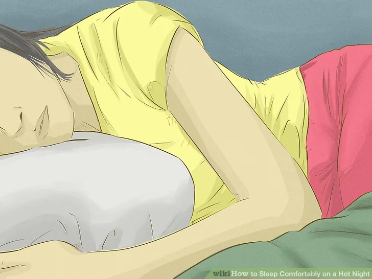

Preparing to Go to Bed
- Stop exercising a few hours before bedtime and drink plenty of water.
When you exercise, you raise your body temperature and retain heat. Not exercising several hours before you go to bed will give your body time to cool down.
You should also drink lots of water throughout the day to stay hydrated. You may also want to keep water by your bedside.
Avoid large or spicy foods or meals.
Eating a heavy meal or spicy food before bedtime may cause you to feel even hotter. Eat a light dinner at least two to three hours before bed and skip the spices and hot sauce.
Avoid drinking ice cold water.
Drinking cold water not only slows digestion, it also slows down metabolism by constricting blood vessels and thereby decreasing hydration and ability of your body to cool off.Drink room temperature water instead.

Take a tepid shower or a bath.
Don’t take a very cold shower, as this can have a rebound effect. Your body temperature may actually rise to counteract the cold water. Instead, have a medium cold, or tepid, shower.
- You can also soak your hands and feet in tepid water. Your hands and feet are your "radiators", or the areas of your body that tend to heat up. Cooling them down by soaking them will regulate your body temperature and cool you down.
Find a cool, dark sleeping spot that is on a lower floor or in a basement.
Heat rises, so find a spot that is low to ground, such as the floor of your bedroom, or that is low in your home, such as the bottom floor or the basement.
Replace heavy bedding with lighter bedding.
Remove thick mattress protectors or pads, which retain heat, and any heavy blankets or duvets. Use lighter bedding like cotton sheets and lightweight cotton weave blankets on your bed.
- Straw or bamboo mats are also great for a cool night’s sleep. They do not retain body heat and will not warm you up. You can create a bamboo mat bed on the floor of your bedroom for an alternative spot to your regular bed.
Put your bedding in the freezer.
Stick your pillow cases, bed sheets and blankets in the freezer 30 minutes before you plan to go to bed. Once you place the bedding on your bed, they should stay cool enough for 30 to 40 minutes, just enough time to fall asleep.
- Avoid getting your bedding wet or sleeping on or in wet sheets or clothing. Don’t dip your socks in cold water and wear them to bed, or wear a wet t-shirt to bed. Bringing anything wet into the room, or wearing anything wet, will only trap dense humidity in your room and cause discomfort.
Open your windows or use an air conditioner.
An hour before bedtime, open the windows in the room to increase air circulation and cool down the room. However, you should close the windows before you fall asleep to avoid heating up the room with air during the night.
- While you sleep your body temperature dips to its lowest point at around 3 am. At 3 am, the temperature outside is also extremely low. If you are asleep with the windows open, the muscles around your neck and head can tense up involuntarily due to the sudden temperature drop and you can be woken up.
- Keep the windows closed and the blinds or shades drawn during the day to avoid heating up the room.

Sleep in cotton clothing or wear as little as possible when going to bed.
Though you may be tempted to strip down and go naked to stay cool, sleeping naked can make you feel hotter as it does not allow moisture to evaporate between your body and the sleeping surface. Go for cotton sleepwear, and avoid synthetic fabrics like nylon or silk, as they are not breathable and can make you feel hotter.
Wipe your face, hands, and feet with a damp cloth.
Use a damp cloth or towel by your bedside to wet your face or arms throughout the night. But avoid going to sleep with a wet face or arms. Once you have wiped your body, dry yourself off with a dry towel before you go to sleep.
- You can also buy special towels that are made of hyper-evaporative material that retains water, but stays dry to the touch. They will cool you down without getting your skin wet.
Run your wrists or the inside of your arms under cold running water for 30 seconds.
These areas are where your blood stream flows closest to the surface of your body. Running them under cold water for a minute will cool your blood down, making your whole body cooler.